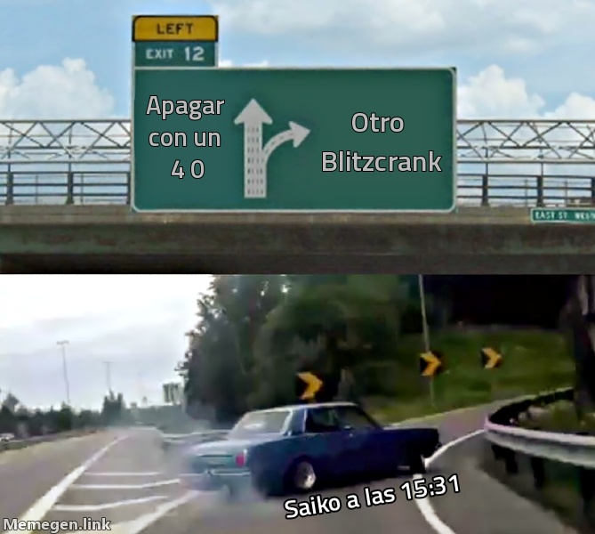

A las tres de la tarde iba invicto
Saiko ganó cuatro Blitzcrank seguidos antes de las tres. Después decidió que el día aún no había terminado.

A las 14:55, Saiko ganó su cuarta partida del día en quince minutos, con el mismo Blitzcrank que le ha denunciado tres veces ante el Sindicato. Cuatro de cuatro. Un hombre normal apaga el ordenador, sale a la calle y le cuenta a alguien que hoy ha sido un buen día. Este periódico lleva tres semanas pidiéndoselo por escrito.
A las 15:31 sacó otro Blitzcrank. Murió en el minuto tres, en el cinco, en el seis y en el ocho; al final, once muertes y derrota. Volvió a las seis y media con Fr4nux de compañero y el robot otra vez: ocho muertes y cero de daño a objetivos. Ganó una con Galio, por despistar al Sindicato, y cerró a las 19:34 con un Blitzcrank sin un solo asesinato. Del 4–0 al 5–3 en cinco horas. A las tres era el mejor día de su mes; a las ocho, un viernes más.
Lo de la mañana tampoco era autocontrol. En la partida de las 13:40 puso 58 guardianes; en la de las 11:35 mandó 54 pings. Saiko no juega de soporte: lo administra. Ilumina como un faro, avisa como una alarma de coche y no sabe dónde está el interruptor de ninguno de los dos. Mientras tanto, en la cuenta del reto, que ni tocó, Dierophant le adelantaba y le bajaba al tercer puesto.
Sigue primero de la General de la vergüenza. No por perder: por no reconocer cuándo ha ganado.
Mañana es domingo. Que alguien le esconda el cargador.